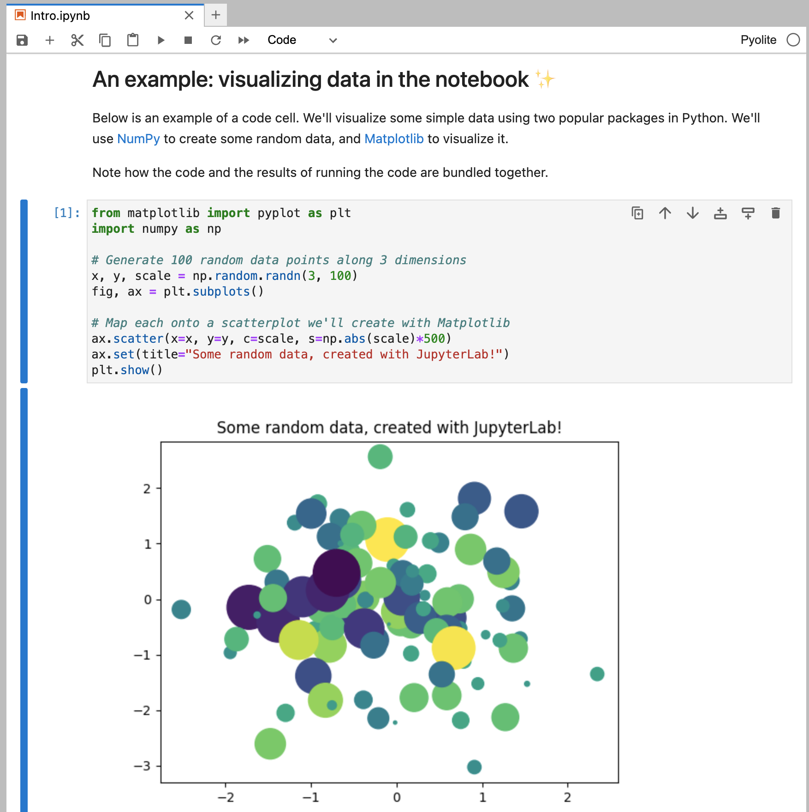

Generate a sample book with template files
Create a sample book:
jupyter-book create my-book/
The created directory my-book/ should look like this:
my-book/
├── _config.yml
├── _toc.yml
├── intro.md
├── logo.png
├── markdown-notebooks.md
├── markdown.md
├── notebooks.ipynb
├── references.bib
└── requirements.txt
Jupyter Book comes bundled with a lightweight sample book that you can use both to help you understand a book’s structure and as templates to build your own book from.
You can create a sample book by running the following command (the name of the folder can be anything, here we chose my-book/ as an example):
jupyter-book create my-book/This will generate a small Jupyter Book in your current working directory that you can both build and explore locally.
This is helpful since we can quickly get an overview of what a full Jupyter Book looks like, instead of figuring it out while creating the files one by one ourselves.
The created directory my-book/ should look like this:
my-book/
├── _config.yml
├── _toc.yml
├── intro.md
├── logo.png
├── markdown-notebooks.md
├── markdown.md
├── notebooks.ipynb
├── references.bib
└── requirements.txtYou can see that this structure includes the configuration and structure files that we mentioned on the previous slide (i.e., _config.yml and _toc.yml). It also includes the following:
The landing page in intro.md
A logo for the book in logo.png
Content for the book in markdown-notebooks.md, markdown.md, and notebook.ipynb
Literary references in references.bib
The Python packages required to build the book in requirements.txt
We will use this sample Jupyter Book as a starting point to work from in the rest of this slide deck and explain each of the book parts in more detail.
Book configuration (_config.yml)
All of the configuration for your book is in a YAML file called _config.yml.
Here’s an example of a simple _config.yml file:
# In _config.yml title : My sample book author : The Jupyter Book Community logo : logo.png execute : execute_notebooks : force # Add a bibtex file so that we can create citations bibtex_bibfiles : - references.bib
All of the configuration for your book is in a file called _config.yml. This file is in the YAML format, just as the environment.yml files that we created in Module 6 uses conda.
You can define metadata for your book (such as its title), add a book logo, turn on different “interactive” buttons (such as a Binder button for pages built from a Jupyter Notebook), and more.
Here’s an example of a simple _config.yml file, which contains key-value pairs to specify the configuration of our book:
title: defines a title for the book. It will show up in the left sidebar.
author: adds the author’s name to your book template, for attribution.
logo: defines a path to an image file for your book’s logo, which will also show up in the sidebar.
execute: contains a collection of configuration options to control execution and caching.
execute_notebooks: tells Jupyter Book to force execution of any computational content each time it builds the book. By default, Jupyter Book executes and caches all book content.
bibtex_bibfiles: is a section to define bibliography files for your Jupyter Book. This configuration activates citations for your book.
There are helpful comments in the configuration file that explain many of the additional options that can be used. For an even more extensive explanation of all the configuration options, refer to the documentation .
Table of contents (_toc.yml)
The _toc.yml file defines the structure of the book:
# In _toc.yml format : jb-book root : intro chapters : - file : markdown - file : notebooks - file : markdown-notebooks
Important:
Each entry under chapters: is the name of a file (extensions are optional).
The filenames should be relative to your book’s root folder .
Jupyter Book uses your table-of-contents file to define the structure of your book. For example, your chapters, sub-chapters, etc.
This is a YAML file with a collection of pages, each one linking to a file in your book. Here’s an example of the _toc.yml file:
# In _toc.yml format : jb-book root : intro chapters : - file : markdown - file : notebooks - file : markdown-notebooks The _toc.yml can be configured to format the book either as jb-article, or jb-book.
The root item is considered the landing page for html builds, and is used as front matter for Latex builds.
For jb-book, subsequent chapters can be added under the chapters: section in the .yml file.
Important:
Each entry under chapters: is the name of a file (extensions are optional).
The filenames should be relative to your book’s root folder .
The title of each chapter will be inferred from the title in your files, i.e. the heading specified with a single #, such as # Title, which stands for the “top-level” heading.
Table of contents (_toc.yml)
You can also put chapters into different groups, which are called parts:
Book content
Markdown files (.md) :
Let’s take a look at one of the markdown files in the template book, intro.md:
Markdown files (.md) :
As we learned in the previous module, the Markdown format can be used to structure text with extra characters and syntax to give it extra meaning (e.g., using **bold** to indicate that we want that piece of text to be shown in bold font). It is very popular and used across many different technology platforms, including Jupyter Book.
Let’s take a look at one of the markdown files in the template book, intro.md:
You can see that there are some special formatting that we didn’t learn about in the last module, e.g. :::. There are some additions to the regular Markdown syntax that are specific for Jupyter Book and we will learn more about them in the next slide deck.
Book content
Jupyter Notebooks (.ipynb) :

Jupyter Notebooks (.ipynb) :
The other type of content is a Jupyter Notebook file with the .ipynb extension.
Jupyter Notebooks have a combination of computational content and narrative content.
Each notebook is associated with a kernel (e.g. Python, R, Julia) that defines the language used to execute the notebook’s computational content.
By default, when Jupyter Book builds your book, notebooks will be executed and their outputs cached . On subsequent builds, notebook pages will be re-executed only if their code has changed.
Any outputs generated by the notebook will be inserted into your built book (though they may not be in your input notebook). This way you do not need to store the notebook’s outputs with your repository.
Time to build your book!
Run the build command in the sample book folder:
jupyter-book build my-book/
Content of the build directory (my-book/_build/html/):
html/
├── _panels_static
│ ├── ...
├── _sources
│ ├── intro.md
│ ├── markdown-notebooks.ipynb
│ ├── ...
├── _static
│ ├── ...
├── index.html
...
Now that we’ve added content and configured our book, it’s time to “build” the book.
You can think of the build process as a more advanced type of export for Jupyter Notebooks, since it will take your source documents and will create output documents (e.g. like a web page) that can be used to present your book.
Since we have already created the sample book in the folder my-book/, you can run the following build command in your terminal to create a fully functioning HTML website:
jupyter-book build my-book/Note : You can use the short-hand jb instead of jupyter-book in the above command, and run jb build my-book/ instead.
If you look into my-book/_build/html/ folder, you’ll see something like this:
html/
├── _panels_static
│ ├── ...
├── _sources
│ ├── intro.md
│ ├── markdown-notebooks.ipynb
│ ├── ...
├── _static
│ ├── ...
├── index.html
...These are all the files needed for a standalone website!
{kind=link}